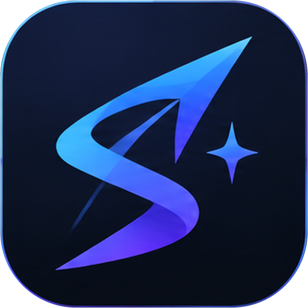

Nueva conversación
Nueva conversación
Historial
Historial
Agentes
Agentes
Equipo
Equipo
Tareas
Tareas
Cada tarea larga guarda un punto de control con su último paso completado. Puedes pausar, reanudar donde se quedó (también tras cerrar la app) y ver qué paso falló y por qué.
Espacio de trabajo
Espacio de trabajo
Servidores MCP
Servidores MCP
Herramientas
Herramientas
Memoria
Memoria
Lo que sé de ti
Hechos duraderos que uso cuando encajan con lo que me pides. Corrígelos, cámbiales la importancia o bórralos cuando quieras: son tuyos.
Recién aprendido
Lo que se aprende de tus mensajes cae aquí y espera tu aprobación. Solo se guarda sin preguntar si activas «Guardar sin preguntar».
Cómo trabajas conmigo
Lo que he ido observando de tu forma de trabajar: qué herramientas, webs y carpetas repites. Vive en un fichero local de este equipo, viaja al modelo configurado dentro del prompt y puedes olvidar un grupo entero.
Buscar en lo que hemos hablado
Encontrará una decisión o un dato de cualquier conversación anterior, aunque sea de hace semanas.
Papelera
Lo que he olvidado. Se queda aquí 30 días por si lo quieres de vuelta; después se borra de verdad.
Tu memoria vive en un fichero local de este equipo. Los recuerdos y los hábitos que encajan con la conversación se envían al modelo que tengas configurado, igual que el resto del mensaje. Nada entra sin tu aprobación (salvo que enciendas «guardar sin preguntar»), y todo lo que sé lo puedes leer, corregir, exportar o borrar desde esta pantalla.
Esto borra todos los hechos, la papelera, la bandeja y tus hábitos, y no se puede deshacer. Escribe OLVIDAR para confirmar.
Skills
Skills
Las skills son instrucciones especializadas (SKILL.md) que Sagitari carga solo cuando la tarea lo necesita: sin coste en tokens hasta que aplican. Importa packs desde GitHub (owner/repo), crea las tuyas o edita la carpeta directamente.
Ajustes
Ajustes
Se aplica al reiniciar SAGITARI.
